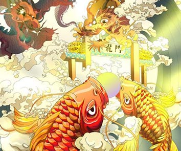
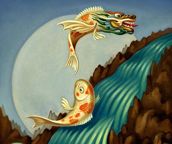
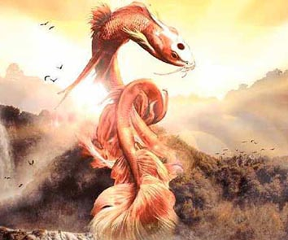

Significado simbólico del DRAGÓN. tradiciones y mucho más. La Leyenda de la transformación del PEZ KOI en DRAGÓN celestial. El DRAGÓN. animal mitológico y legendario de China y otras culturas. Todo en Predicciones para el DRAGÓN. horoscopo-chino-2022.
TRANSFORMACIÓN    DEFINICIONES Significado simbólico del Dragón tradiciones y mucho más. +info LEYENDA Historia del Pez Koi que se transformo en un Dragón celestial. +info CULTURA CHINA El Dragón es un animal mitológico y legendario de China y otras culturas. +info PREDICCIONES Que dice el horoscopo para el futuro de los Dragones 2022. +info